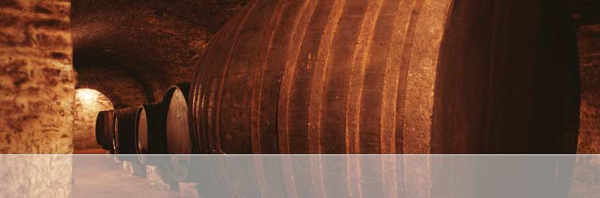
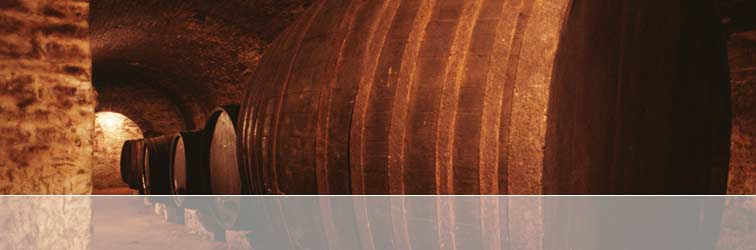

 Although production is limited, the 2005 MAX V is now
available to all wine
enthusiasts and advocates of small batch winemaking.
Please register your interest
by contacting info@rocwines.com.au
or visit our ORDERING PAGE
for further details..
Seguin Moreau was the first cooper to decide to improve on centuries of empirical know-how by calling on the methods and tools used in scientific research. Signed in 1983, and later consolidated with the funding of full-time researchers, Seguin Moreau's partnership with the Bordeaux Faculty of Oenology has succeeded in shedding new light on the interactions between wood and wine.
FROM FOREST TO BARREL
From the forest to the stave wood, from the stave wood to the barrel, and then from the barrel to the wine, this research was the first of its kind to highlight the importance of oenological criteria in the selection of forest trees, the benefits of controlled maturing of the wood outdoors, the nature of the constituents obtained during barrel toasting and the ways in which they blend with those of the wine during the process of ageing.
The many experiments conducted in some of the greatest vineyards in France and throughout the world have resulted in the prestigious Segin Moreau ranges.
These barrels are veritable custom-made oenological instruments, controlled at every stage of their production, offering wine-makers the world over a choice of arms and representing an invaluable step forward in producing truly personalised wines.
Visit the Seguin Moreau website: www.seguin-moreau.fr